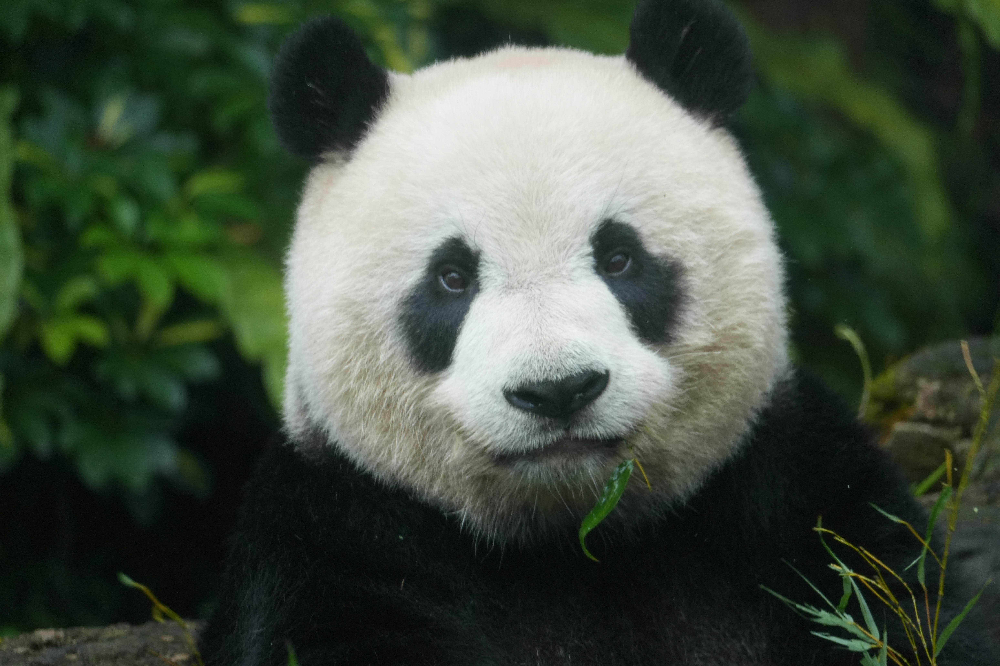
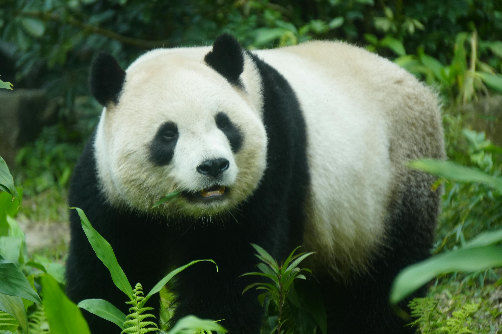

In a heartening success story for wildlife conservation, China has witnessed a significant rise in the population of its most beloved animal — the giant panda. Once on the brink of extinction, these iconic creatures are now making a steady comeback, thanks to decades of dedicated conservation efforts.
This achievement is not just a victory for one species, but a powerful example of how long-term commitment and strategic action can help protect endangered wildlife.
For years, the giant panda stood as a symbol of how fragile the natural world can be. It was the species that reminded us what extinction risk actually looks like. Today, giant pandas are officially classified as Vulnerable rather than Endangered, reflecting steady population growth and long-term habitat protection.
The most widely cited estimate puts the wild giant panda population at around 1,864 individuals, an increase of about 17 percent over the previous decade. That progress didn't happen quickly. It followed years of expanding protected reserves, preserving bamboo forests, and strengthening enforcement against poaching.
The numbers themselves may seem small, but what they represent matters. In conservation science, status changes are driven by data, not sentiment. And in this case, the data tells a story of persistence paying off.
On National Panda Day, that progress feels especially worth pausing to recognize.
Part of what makes this recovery so remarkable is how coordinated the effort has been. China's government invested heavily in creating and expanding panda reserves, eventually linking many of them into what is now known as the Giant Panda National Park. This vast protected area connects fragmented habitats, allowing pandas to roam, breed, and maintain healthier genetic diversity. It represents a more modern, ecosystem-wide approach to conservation rather than focusing on a single species in isolation.
Securing the Panda's Future
Equally important has been the role of scientific research. Conservationists spent decades studying panda behavior, diet, and breeding patterns—both in the wild and in carefully managed breeding centers. These insights helped improve survival rates and guided successful reintroduction programs, where captive-bred pandas were gradually released back into protected habitats. While challenging, these programs marked a turning point in demonstrating that human intervention, when done carefully, can support natural recovery.
Still, experts caution against viewing this as a finished story. Climate change remains a serious long-term threat, particularly because pandas rely so heavily on bamboo, which is sensitive to environmental shifts. Habitat fragmentation, while improved, has not been completely solved. Conservationists stress that continued monitoring, funding, and global cooperation will be essential to maintain the progress achieved so far.
Even with those challenges, the panda's recovery stands as one of the clearest examples of conservation working in practice. It shows that with patience, science, and sustained commitment, reversing environmental decline is possible. On days like National Panda Day, that message resonates far beyond a single species—it becomes a reminder that positive change, though slow, is within reach.
This wasn't a short campaign or a single breakthrough moment. It was the result of decades of steady policy, funding, monitoring, and cooperation. That kind of long-term alignment is rare, which is part of why the panda story stands out. The panda's story reminds us that while progress is possible, protecting it is a responsibility that doesn't end.
Local communities have also played a crucial role in this success story. Efforts to reduce deforestation, promote sustainable land use, and create eco-tourism opportunities have helped align economic incentives with conservation goals. Instead of being seen as obstacles, nearby communities have increasingly become stewards of panda habitats, benefiting from their protection while helping ensure it continues.
